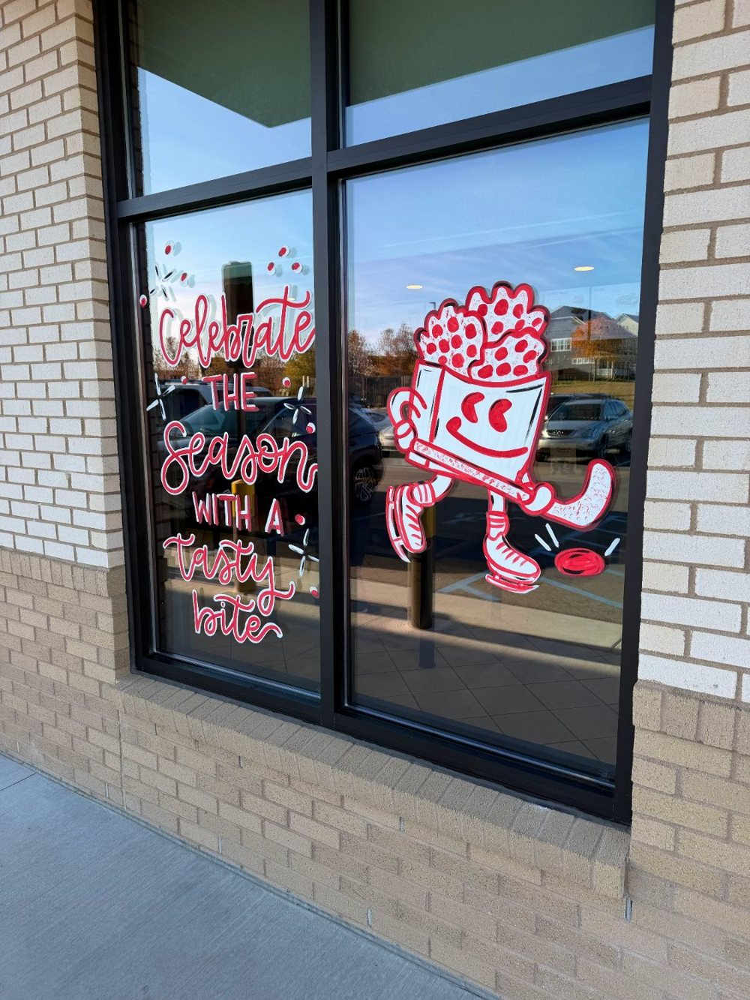
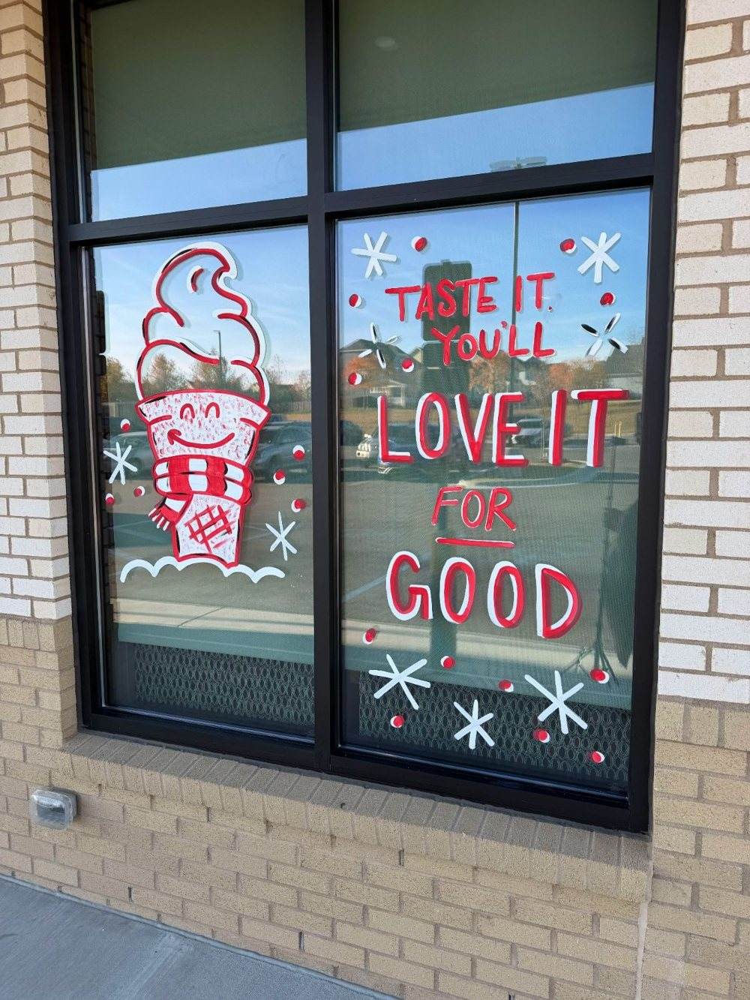
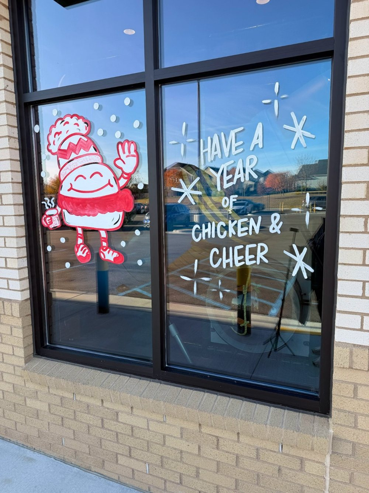
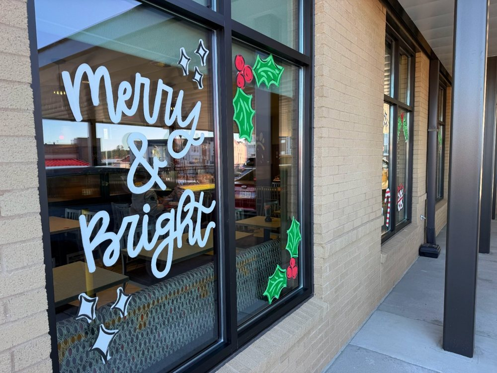

Holiday and seasonal windows
Christmas, winter, fall, spring and summer designs, refreshed each season.
Storefront & holiday window painting
Hand painted window art for restaurants, shops and offices: holiday scenes, seasonal greetings, grand openings and your own characters, painted on site by Bailey Powers.
What we paint
Chintz Creative paints storefront and business windows by hand with paint made for glass. Each design is sketched for your approval, painted on site, and cleaned off with water when the season changes.
Christmas, winter, fall, spring and summer designs, refreshed each season.
Openings, anniversaries, sales and promotions, lettered so they read from the street.
Mascots, menu favorites and brand colors, drawn in a friendly hand painted style.
Work
A set of holiday windows painted for a local restaurant. Current work is on Instagram.




Before you ask
The inquiry form walks through each of these. Rough answers are fine.
Questions
Yes. Chintz Creative paints storefront and business windows by hand: holiday and seasonal designs, grand openings, sales and promotions, and lettering with your message.
Window paint made for glass. It holds up outdoors through the season and comes off with water and a glass scraper when it is time for the next design.
Usually on the outside so it reads clearly from the sidewalk and street. Inside painting is possible when outside access is difficult; lettering is then painted in reverse.
Yes. Send your message, colors and any characters you want included, and Bailey will sketch a design for approval before painting.
Removal can be included in the quote. Many businesses book a new design each season, and the old one is cleaned off before the new one goes up.
Price depends on the number and size of windows, how detailed the design is, and whether removal is included. Send the details on the inquiry form for a quote.
Around Wendell, Knightdale, Zebulon and Raleigh, North Carolina. Ask about locations farther out.
Book holiday windows by early November. Other seasons and events, about two to three weeks ahead.
Also from the studio: Hand lettering and chalkboards · Custom watercolors
Window painting
Tell Bailey about your windows, your message and your timing. She will reply with a design idea and a quote.